5 Point and Interval Estimates
Sampling Review
$$ \newcommand{X}{} \newcommand{Y}{} % A hex digit after # inside a macro body is eaten by build-time expansion, so digit-leading hexes spell # via .
$$
\color{gray} \begin{array}{r|rrrrrr|r} j & 1 & 2 & 3 & 4 & 5 & 6 & \bar{y} \\ y_{j} & 0 & 1 & \textcolor{#073B4C}{1} & 1 & \textcolor{#073B4C}{0} & \textcolor{#073B4C}{1} & \textcolor{black}{4/6} \\ \end{array}
In the last chapter, we talked about how to use sampling to summarize a population without surveying everyone in it. For example, we might estimate the proportion of people in a population of six who prefer chocolate to sour candy. In the fake population shown above, 4/6 people prefer chocolate. Those who prefer chocolate are in the top row, at y=1. Those who prefer sour candy are below at y=0.
We considered a few different sampling schemes: sampling with replacement, sampling without replacement, and convenience sampling. Suppose we chose sampling with replacement. We’d randomly pick people from our population to survey, putting them back each time so they could be picked again. Of the 3 people we sampled, 2 prefer chocolate to sour candy. So our estimate of the proportion of the population who preferred chocolate was 2/3.
\color{gray} \begin{array}{r|rrrrrr|r} j & 1 & 2 & 3 & 4 & 5 & 6 & \bar{Y} \\ y_{j} & 0 & 1 & \textcolor{#073B4C}{1} & 1 & \textcolor{#073B4C}{0} & \textcolor{#073B4C}{1} & \textcolor{#073B4C}{2/3} \\ y_{j} & 0 & 1 & 1 & \textcolor{#EF476F}{1} & 0 & \textcolor{#EF476F}{1} & \textcolor{#EF476F}{2/2} \\ y_{j} & \textcolor{#118AB2}{0} & 1 & \textcolor{#118AB2}{1} & \textcolor{#118AB2}{1} & 0 & \textcolor{#118AB2}{1} & \textcolor{#118AB2}{3/4} \\ \end{array}
Sampling was a huge time-saver. But is our estimate trustworthy? How close was our estimate to the actual proportion in the population of 6? We looked into it ahead of time by running a simulation of our survey on a fake population. We did exactly what we did in our actual survey, but we did it over and over. This let us look at what our estimator does, knowing what we want it to do: be \textcolor{gray}{ \approx 4/6}. Above, we’ve shown the results of three of these simulations. We call the distribution of estimates we get like this our estimator’s sampling distribution. These three estimates are three draws from the sampling distribution. That’s three equally-likely outcomes of our survey. And we do ok in these three. But that’s just three. To get a better sense of what’s likely, we should look at a lot more.
Dots. 1000 ●s, one per simulated poll. The green line marks the population proportion. Estimates are usually close, but not always.
Bars. Count the dots in each column. But the columns have uneven spacing—most dots are in the middle, spread across many columns. No single bar is tall there.
Histogram. Group nearby columns into equal-width bins. This shows the density of estimates. The area of the histogram between any two values gives the fraction of estimates there.
Sampling Distributions in Real Studies

It’s easy to think about sampling distributions when we’re running a simulation of our study. We can run our simulation as many times as we want and plot the sampling distribution. And we can use our knowledge of the population to see if we’re happy with it.
In a real study, we don’t have any of this. All we get is one estimate. But that doesn’t stop us from filling in the rest of the picture by thinking of it as one draw from our estimator’s sampling distribution, working out where that sampling distribution is in relation to the estimation target, and using the data we have to estimate the sampling distribution.
What Do We Do with a Sampling Distribution?
A sampling distribution is an odd summary of the proportion of people who prefer chocolate. It’s not what you asked for. You asked for a single number describing a population. What you got was 1000 numbers describing 1000 samples.
But it does tell you something if you look at it right. How often is the estimate exactly equal to the population proportion? 45% of the time. How often is it off by \textcolor{#118AB2}{1/3} or less? 96% of the time.
To make this sound like a statement about the population, we report two things.
- An interval you can expect the population proportion to be in. For example, we think it’s in the interval \textcolor{#073B4C}{2/3} \pm \textcolor{#118AB2}{1/3} because \textcolor{#073B4C}{2/3} is our sample proportion.
- The degree of confidence you have that it’s actually in it. For example, it’s in an interval calculated exactly like this in 96% of surveys run exactly like this.
Sampling Mechanisms
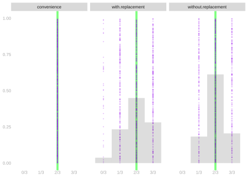
Let’s take a moment to get a sense of how different sampling schemes affect our estimate. To do this, we’ll look at 1000 draws from the sampling distribution we get using each. To help it a bit easier, we’ll display a histogram of each too (Figure 6.2).
2/3 of the mechanisms we’ve plotted give us fairly similar sampling distributions. They have a peak around 2/3, which is the population proportion. That’s where most of our estimates wind up being—where we want them.
The one that’s different is convenience sampling. It was most convenient for me to sample the first three people in our population. That doesn’t change, so neither does our estimate. In this case, it’s a good one. That happens sometimes. But you can’t count on it. Without a random mechanism, it’s hard to know your estimate will be good. Using multiple, meaningfully different fake populations can help you catch stuff that works by luck in one. Today, we’ll focus on sampling with replacement.
That’s just to keep things simple and concrete. Most of what we’ll say will apply to any sampling scheme. We’ll really be talking about the relationship between three things.
- Our estimator
- Its sampling distribution
- Our estimation target
Later, we’ll look into this more generally. We’ll talk about how we want these three things to be related and when we know they’re related that way.
Polling
Suppose that, week before the 2020 presidential election, you did some polling. You use a list of the m \approx 7.23M people registered to vote in Georgia. And you make n=625 phone calls. Each call, you select a voter uniformly at random from the list, e.g. by rolling a 7.23M -sided die. And then you ask the potential voter whether they plan to vote.
Suppose also that all these registered voters will pick up the phone when called, respond honestly to your questions, and not change their minds about voting. That is, suppose they tell us whether they do ultimately vote on election day.
You put your polling results in a table. It has one column for each call. In that columns, you record the call number i—a number from 1 \ldots 625, and the response Y_i of the person you called—1 for ‘yes and 0 for no’.
\begin{array}{r|rrrr|r} i & 1 & 2 & \dots & 625 & \bar{Y}_{625} \\ Y_i & 1 & 1 & \dots & 1 & 0.68 \\ \end{array}
You summarized the results with an extra column: the mean of the responses. Remember that the mean of a binary variable is a frequency. Or a proportion.1 You found that 68% of the people polled said they would vote.
We want to estimate the proportion of all registered voters — our population — who will vote. To do this, we use the proportion of polled voters — our sample — who said they would. When the election occurs, we get to see who turns out to vote. 5.05M people, or roughly 70% of registered voters, actually vote.
Outcomes for the population of registered voters. To enumerate our population, we give each registered voter a number j \in 1 \ldots 7.23M and write y_j for the turnout of the person with ID j.
Before the Election
\
\begin{array}{r|rrrr|r}\ni & 1 & 2 & \dots & 625 & \bar{Y}_{625} \\
Y_i & 1 & 1 & \dots & 1 & 0.68 \\
\end{array}\
After the Election
\begin{array}{r|rrrrrr|r} j & 1 & 2 & 3 & 4 & \dots & 7.23M & \bar{y}_{7.23M} \\ y_{j} & 1 & 1 & 1 & 0 & \dots & 1 & 0.70 \\ \end{array}
Our sample proportion 425 / 625 \approx 0.68 is close to the population proportion 5.05M / 7.23M \approx 0.70
That’s pretty accurate. Our reputation as a turnout pollster is intact for now. But unless we’re looking to retire, one success isn’t enough. We’re going to poll again. If our methods aren’t reliable, we’ve got work to do fixing them. Even if they are, if we overstate our accuracy, we’re going to have to answer for it. For example, we could say we’ll be off by at most 2%, since that’s what happened this time. But if it’s 4% next time, that’s not going to look good.
Important Questions
- Was it luck that we got as close as we did?
- Could we have predicted how close we’d get before the election happened?
To find answers, we’ll think about what would happen if our friends had run identical polls. Each friend would choose a different random sample Y_1 \ldots Y_{625} and estimate the population proportion using the proportion in their sample. We’ll see how accurate these estimates tend to be.
Sampling
To answer these questions, let’s first be precise about how we run our poll. For each call i, we randomly select a voter with an ID we’ll call J_i. And we record as that call’s outcome the turnout of that voter: Y_i = y_{J_i}. On each call, each registered voter has a 1/7.23M chance of being called. This is called sampling with replacement because we could call the same person twice—though in our poll, this is unlikely because we’re making a small number of calls relative to population size.
| call | 1 | 2 | … | 625 | \bar Y |
|---|---|---|---|---|---|
| J | 869369 | 4428455 | … | 1268868 | |
| Y | 1 | 1 | … | 1 | 0.00 |
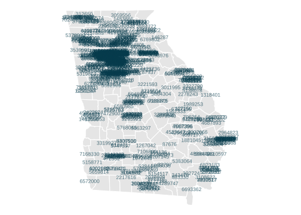
| call | 1 | 2 | … | 625 | \bar Y |
|---|---|---|---|---|---|
| J | 869369 | 4428455 | … | 1268868 | |
| Y | 1 | 1 | … | 1 | 0.00 |
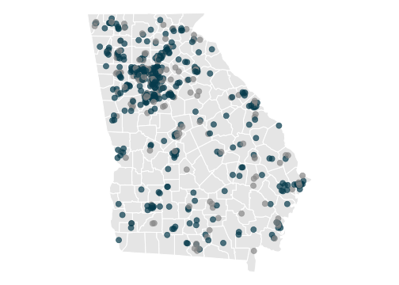
| call | 1 | 2 | … | 625 | \bar Y |
|---|---|---|---|---|---|
| J | 869369 | 4428455 | … | 1268868 | |
| Y | 1 | 1 | … | 1 | 0.68 |
First few calls. The first reaches J_1 = 869369, who says Y_1 = 1. The second reaches J_2 = 4428455, who says Y_2 = 1.
All 625 calls. After 625 calls: Y_1 \ldots Y_{625}. Each call is independent.
Our estimate. Now we discard the IDs—all that matters is the responses. Voters (colored) vs non-voters (gray). Sample mean \overline{Y}_{625} = 0.68.
What happened? Our estimate is close to the population mean (0.70). That’s what we wanted. But was that luck?
Sampling Distributions
To find out, imagine our friends ran identical polls. Same method, same population—but different random samples, so different estimates.
| 1 | 2 | … | 625 | \bar Y | |
|---|---|---|---|---|---|
| us | 1 | 1 | … | 1 | 0.68 |
| friend 1 | 0 | 1 | … | 1 | 0.71 |
| friend 2 | 1 | 1 | … | 1 | 0.70 |
| … | … | … | … | … | … |
| friend 10k | 1 | 1 | … | 1 | 0.71 |
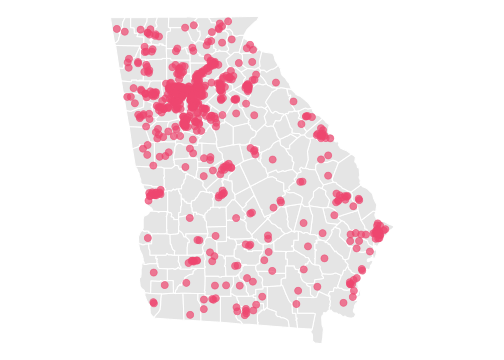
| 1 | 2 | … | 625 | \bar Y | |
|---|---|---|---|---|---|
| us | 1 | 1 | … | 1 | 0.68 |
| friend 1 | 0 | 1 | … | 1 | 0.71 |
| friend 2 | 1 | 1 | … | 1 | 0.70 |
| … | … | … | … | … | … |
| friend 10k | 1 | 1 | … | 1 | 0.71 |
| 1 | 2 | … | 625 | \bar Y | |
|---|---|---|---|---|---|
| us | 1 | 1 | … | 1 | 0.68 |
| friend 1 | 0 | 1 | … | 1 | 0.71 |
| friend 2 | 1 | 1 | … | 1 | 0.70 |
| … | … | … | … | … | … |
| friend 10k | 1 | 1 | … | 1 | 0.71 |
| 1 | 2 | … | 625 | \bar Y | |
|---|---|---|---|---|---|
| us | 1 | 1 | … | 1 | 0.68 |
| friend 1 | 0 | 1 | … | 1 | 0.71 |
| friend 2 | 1 | 1 | … | 1 | 0.70 |
| … | … | … | … | … | … |
| friend 10k | 1 | 1 | … | 1 | 0.71 |
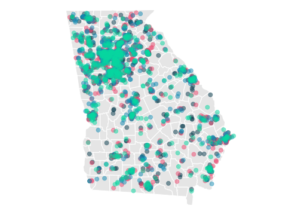
| 1 | 2 | … | 625 | \bar Y | |
|---|---|---|---|---|---|
| us | 1 | 1 | … | 1 | 0.68 |
| friend 1 | 0 | 1 | … | 1 | 0.71 |
| friend 2 | 1 | 1 | … | 1 | 0.70 |
| … | … | … | … | … | … |
| friend 10k | 1 | 1 | … | 1 | 0.71 |
Our poll. Estimate: 0.68.
Friend 1. Same method, different luck: 0.71.
Friend 2. Another sample: 0.70.
All three. All close to the truth (0.70).
Many more friends. Imagine 10,000 friends, each running the same poll. 10,000 estimates—a whole distribution.
This thought experiment illustrates the sampling distribution: the distribution of estimates we’d get running the same poll many times.
The Sampling Distribution of our Estimate
We run 10,000 simulated polls and store who we call (J) and what they say (Y).
draw.indices = function(y) sample(seq_along(y), n, replace=TRUE)
Js = rep(list(y), 10000) |>
map(draw.indices) |>
simplify2array() |>
t() |>
with_seed()
Ys = matrix(y[Js], nrow=10000)Programming the sampling distribution
The function draw.indices names one repetition of the sampling process: it draws the row indices for one poll. rep(list(y), 10000) supplies the population to that function 10,000 times, and map() collects the 10,000 index vectors. The final matrix has one simulated poll in each row.
This is the repeat-and-collect pattern from the programming reference. The statistical operation gets a name; map() handles where each result is stored.
We calculate the sample proportion for each poll.
meanY.samples = rowMeans(Ys)And histogram the result. That’s the human-readable version. If you’re a computer or a person who just really like tables, you can just put all the numbers—including our sample proportions—in a table. Before we look at the real thing, let’s sketch the histogram we expect to see.
If you take it seriously, sketching is a great way to develop your intution. As you sketch your histogram, think about what you’re doing. Are you drawing your histogram in the location you think it should be in? What about the shape? Is its spread what you really think it should be?
There are a few features of our sampling distribution that we may want to highlight. In Figure 7.4 below, the mean of the sampling distribution is the solid blue line. The middle 2/3 of the sampling distribution lies between the dashed blue lines. The middle 95% of the sampling distribution lies between the dotted blue lines.
Our estimation target — the turnout frequency in the population — is drawn as a wide green line. It’s in exactly the same place as the solid blue line.2 What does this tell us about our estimator?
Observation. Our point estimate (the ● in Figure 7.4) is close to our estimation target. It’s within 2%. Did we get lucky? Not really. In 68% of polls, the estimator is within 2% of the target. In 95% of polls, the estimator is within 4% of the target.
Could we have predicted how close we’d get before the election happened? Yes, in a sense. We will use an interval estimate—a range of values the estimation target is likely to be in. The width of this interval speaks to the ‘how close’ question. The coverage probability — the probability our estimate is actually that close — qualifies this answer.
Interval Estimation
Our point estimate of the turnout frequency in our population is the turnout frequency in our sample: \overline{Y}_{625}. So let’s try an interval of width 0.02 centered on it: \overline{Y}_{625} \pm 0.01. This is just a width we chose arbitarily. Maybe it’s wishful thinking. Being off by at most 1% sounds good. What we want is for our interval to cover our estimation target, i.e. for the population frequency to be in our interval. This one doesn’t. Is that just bad luck? Or is it typical of \pm 0.01 intervals? Let’s see what happens when our friends try intervals like this.
Our interval. We draw \pm .01 around our estimate. It misses the target (green line). Bad luck?
Friends’ intervals. The pink and teal intervals from our friends. One covers, one doesn’t. 1/3 coverage so far.
100 polls. 45/100 cover the target. This gives us a sense of the coverage probability.
To be more precise about coverage, we could simulate millions of polls. But there’s a more direct way to calculate the coverage probability.
Calculating the Coverage Probability
Activity. Explain how to calculate this coverage probability using the sampling distribution of your point estimate \bar Y_{625}.
Calibrating Interval Estimates

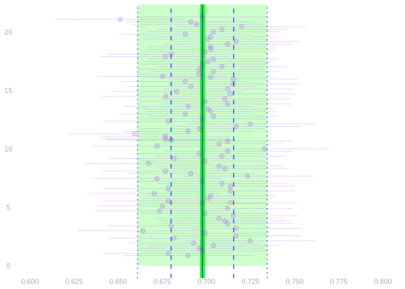
Narrow intervals (\pm .01). Coverage is about 43%. Think of how you’d advertise: “I’m right about half the time.” Not great.
Wide intervals (95%). The green shading now spans the dotted lines—the middle 95% of the sampling distribution. Coverage is 95%.
What we just did was choose a width and calculate a coverage probability. Instead, let’s go backward. We’ll choose a coverage probability—95% is conventional—and calculate the width we need to get it. An interval estimate calibrated like this is called a confidence interval.
Question. How wide do you have to make intervals to actually get 95% coverage?
Answer. The width should match the distance between the dotted blue lines. That’s the range containing 95% of estimates from the sampling distribution.
coverage = mean(mean(y)- dotted.width/2 <= meanY.samples & meanY.samples <= mean(y) + dotted.width/2)
coverage[1] 0.9516A Problem
We can’t calibrate intervals like this in real life. When we run our a poll, we get a single point estimate \bar Y_{625} based on our sample. We don’t know the sampling distribution of this point estimate until election day. But what we actually do is almost the same. We do the same thing. But we use an estimate of the sampling distribution in place of the thing itself. That’s what we’ll talk about next class.
Communication
Talking about calibrated interval estimates, a.k.a. confidence intervals, has some advantages. It focuses on what we actually want to know: where the estimation target is. It reminds us that we’re not (usually) going to be able to know it exactly. It gives us a sense of how close we can expect that we’ve gotten.
But there’s something about them that is a bit infuriating when you’re not used to them. Fundamentally, you’re talking about what would happen in surveys you aren’t doing. You can imagine someone saying ‘I don’t have time for imaginary surveys. What did this one tell you?’ And being pretty unhappy when the answer is ‘If that’s how you want to think about it, almost nothing.’
This isn’t a problem with intervals. This is something that’s fundamentally uncomfortable about sampling. It might feel like a miracle that you can say anything about 7.23M people after 625 phone calls. But once someone thinks you can, it can be hard for them to accept that you also kind of can’t. We really are just saying ‘I think it’s between 64% and 72%, but I’m wrong sometimes.’ We are being clear about what ‘sometimes’ means. But that feels like it’s about you more than it is about what they want to know.
Don’t Make this Mistake!
Talking about surveys you aren’t doing is pretty awkward. So awkward that you’ll want to try to avoid it. It’s tempting to say something nonsensical, e.g. “the turnout frequency in the election is in my confidence interval, 0.64-0.72, 95% of the time.” This a really weird thing to say. It’s like saying that 95% of the time 2 is between 1 and 3. It either is or it isn’t. The only way it could make sense is if the turnout frequency were random. Because 0.64 and 0.72 aren’t. People do that. Don’t. And please don’t encourage it by saying stuff like this.
This doesn’t come up that often because you can just say ‘confidence interval’ most of the time. So you really only have to deal with all of this awkwardness in two situations.
- When you say ‘confidence interval’ and someone asks what that means.
- When someone else says ‘confidence interval’ but clearly doesn’t know what it means.
It takes a bit of practice to get good at this. And you’ll get some.
This is one of those instances where language is complicated. We say the ‘frequency a person said yes’ or the ‘proportion of people who said yes’. If we’re leaving the people out of the sentence, we say either: ‘the sample frequency’ or ‘the sample proportion’. Using only one or the other really limits how you phrase things.↩︎
That’s why it looks like the solid blue line is ‘highlighted’ in green.↩︎